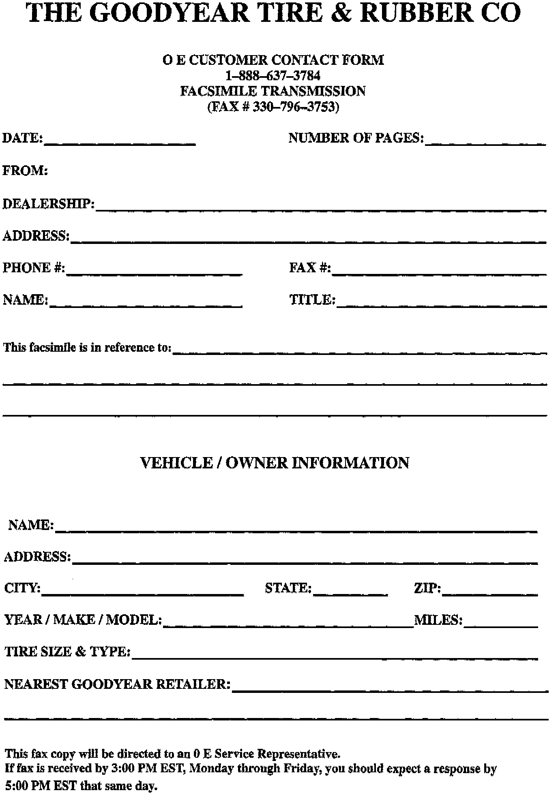

Tires - Goodyear Tire And Rubber Toll Free Line
Group: 00Number: 97-07
Date: Aug. 19, 1997
Subject:
Goodyear Tire & Rubber, OE Customer Service Toll Free line
Model(s):
All All
As a commitment to full customer satisfaction, the Goodyear Tire & Rubber Company has established a toll-free OE Service line to assist the Dealer network regarding any Goodyear tire concerns.

Please make copies of the included Customer Contact Form, fill out and Fax to Goodyear at the Fax number listed on the form (or call the toll-free number) if any concerns regarding Goodyear tires should arise.